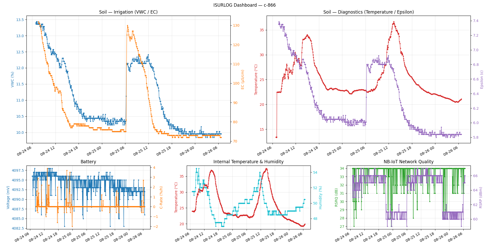

2. Datos Históricos vía API de InfluxDB (Método Pull)
2.1 Resumen
Todo el histórico de datos de los dispositivos Isurlog se almacena en InfluxDB, una base de datos de series temporales de alto rendimiento y código abierto. Está diseñada específicamente para manejar grandes volúmenes de datos con marca temporal, lo que la hace ideal para aplicaciones de IoT y monitorización.
Los datos a los que se accede por este método vienen completamente decodificados y disponibles en un formato legible, listos para integrarse directamente en sistemas SCADA, herramientas de BI, o aplicaciones a medida, sin necesidad de decodificar el payload.
2.2 Librerías Cliente y Documentación
InfluxDB ofrece una amplia variedad de librerías cliente con soporte oficial para los lenguajes de programación más populares, incluyendo Python, JavaScript, Java, Go y C#, lo que simplifica la interacción con los datos.
- La documentación oficial completa de la API v2 de InfluxDB y de estas librerías cliente se encuentra en la siguiente URL:
2.3 Parámetros de Conexión
Se necesitan los siguientes parámetros para establecer una conexión segura con la instancia de InfluxDB de Isurlog:
- Endpoint URL:
https://influxisurdash.isurki.com - Organization:
isurki - Bucket: se proporcionará un nombre de bucket único para cada cliente (p. ej.,
Isurlog_ClientName). Este bucket contiene exclusivamente los datos de los dispositivos Isurlog registrados de ese cliente. - API Token: se proporcionará a cada cliente un token de API único y privado para un acceso seguro. Este token debe incluirse en la cabecera de autorización de todas las peticiones a la API. Contactar con nuestro equipo de soporte para recibir tu token.
- Device Tag: cada punto lleva la etiqueta
isurlog_id(el ID del dispositivo, p. ej.c-123) — úsala para filtrar por dispositivo en tus propias consultas Flux.
2.4 Esquema de Datos: Referencia de Claves de Campo
Esta sección ofrece la correspondencia entre las entradas físicas y virtuales del datalogger Isurlog y las claves _field correspondientes usadas en la base de datos InfluxDB. El valor asociado a cada clave de campo representa la medición final, procesada y escalada del sensor, lista para usarse en unidades de ingeniería.
Nota
Para las entradas analógicas, digitales y Modbus, el valor final y su unidad de ingeniería (p. ej., m³, bar, pH) se determinan según el escalado y la configuración aplicados en la aplicación IsurDASH. El valor almacenado en la base de datos es el resultado final ya escalado.
| Entrada Isurlog | Clave _field de InfluxDB |
Descripción |
|---|---|---|
| Analog Input 0 | AnalogInput0 |
La medición en unidades de ingeniería, tal como se configuró en IsurDASH. |
| Analog Input 1 | AnalogInput1 |
La medición en unidades de ingeniería, tal como se configuró en IsurDASH. |
| Analog Input 2 | AnalogInput2 |
La medición en unidades de ingeniería, tal como se configuró en IsurDASH. |
| Analog Input 3 | AnalogInput3 |
La medición en unidades de ingeniería, tal como se configuró en IsurDASH. |
| Digital Input 0 | DigitalInput0 |
Depende de la configuración en IsurDASH: un valor numérico para conteo de pulsos, o un estado binario (0 abierto, 1 cerrado). |
| Modbus Virtual 0 | ModbusInput0 |
La medición en unidades de ingeniería, tal como se configuró en IsurDASH. |
| Modbus Virtual 1 | ModbusInput1 |
La medición en unidades de ingeniería, tal como se configuró en IsurDASH. |
| Modbus Virtual 2 | ModbusInput2 |
La medición en unidades de ingeniería, tal como se configuró en IsurDASH. |
| Modbus Virtual 3 | ModbusInput3 |
La medición en unidades de ingeniería, tal como se configuró en IsurDASH. |
| PT100 Input | TemperatureInput0 |
Medición de temperatura del sensor PT100 externo, en grados Celsius (°C). |
| Internal Temperature | TemperatureSensor0 |
Temperatura del sensor integrado en la propia PCB del ISURLOG, en grados Celsius (°C). |
| External Temperature | TemperatureSensor1 |
Temperatura de un sensor externo conectado por el puerto QWIIC (I2C), en grados Celsius (°C). Presente solo si ese sensor está conectado. |
| Internal Humidity | HumiditySensor0 |
Humedad relativa del sensor integrado en la propia PCB del ISURLOG (%). |
| External Humidity | HumiditySensor1 |
Humedad relativa de un sensor externo conectado por el puerto QWIIC (I2C) (%). Presente solo si ese sensor está conectado. |
| Accelerometer X-axis | AccelerometerX0 |
Aceleración en el eje X (g). |
| Accelerometer Y-axis | AccelerometerY0 |
Aceleración en el eje Y (g). |
| Accelerometer Z-axis | AccelerometerZ0 |
Aceleración en el eje Z (g). |
| Battery Voltage | VoltageInput0 |
La tensión de batería del dispositivo, en milivoltios (mV). |
| Battery C-Rate | CRateInput0 |
La tasa de carga/descarga de la batería, en %/h. |
| Modem Signal Quality | ModemData0 |
RSRQ (calidad de señal recibida de referencia) reportada por el módem, en dB. Solo dispositivos NB-IoT — no disponible en dispositivos LoRaWAN. |
| Modem Signal Strength | ModemData1 |
RSRP (potencia de señal recibida de referencia) reportada por el módem, en dBm. Solo dispositivos NB-IoT — no disponible en dispositivos LoRaWAN. |
2.5 Implementación de Referencia
En el archivo adjunto isurlog_influx_demo.py se ofrece un script completo en Python que muestra cómo conectarse a la API de InfluxDB, consultar valores históricos de un dispositivo, imprimirlos como tabla, y representarlos en un gráfico.
Pruébalo al Instante — Sin Necesidad de Credenciales
Los parámetros de conexión del script vienen precargados con una demo pública de solo lectura, para que puedas ejecutarlo de inmediato, antes de contactar con soporte para conseguir tu propio token:
- Bucket:
Isurlog_DEMO - Dispositivo (
isurlog_id):c-866 - Acceso: solo lectura, limitado a este bucket únicamente — no puede leer datos de ningún otro cliente.
Este dispositivo de demostración reporta: acelerómetro (X/Y/Z), temperatura y humedad interna, tensión de batería, tasa de carga de batería, calidad de señal NB-IoT (RSRQ/RSRP), y — a través de una sonda de suelo Modbus (S-Soil MTEC-02B) conectada a él — temperatura del suelo, humedad (VWC), conductividad eléctrica (EC), y permitividad dieléctrica en bruto (Epsilon), por lo que ejercita la mayoría de las claves de campo de la tabla anterior.
Para ejecutarlo, desde dentro de data_integration/, usando un entorno virtual (práctica estándar, y obligatoria en sistemas basados en Debian/Ubuntu más recientes, como WSL, que bloquean el pip install a nivel de sistema):
python3 -m venv venv
source venv/bin/activate
pip install -r requirements.txt
python isurlog_influx_demo.py
Al terminar:
deactivate
Esto imprime una tabla con las lecturas de los últimos 7 días y abre una única ventana con un dashboard (mediante matplotlib), en vez de una ventana emergente por gráfico. El diseño tiene dos filas — las lecturas de la sonda de suelo arriba, más grandes, ya que son el objetivo principal de esta demo; las métricas propias de mantenimiento del dispositivo debajo, más pequeñas:

El dashboard del script de referencia — lecturas de la sonda de suelo arriba, métricas de mantenimiento del dispositivo debajo.
- Soil — Irrigation (grande) — humedad (
ModbusInput1/VWC, eje izquierdo, %) frente a conductividad eléctrica (ModbusInput2/EC, eje derecho, µS/cm). - Soil — Diagnostics (grande) — temperatura del suelo (
ModbusInput0, eje izquierdo, °C) frente a permitividad dieléctrica en bruto (ModbusInput3/Epsilon, eje derecho — sin unidad, ya que es un ratio entre dos permitividades). - Battery (pequeño) — tensión (
VoltageInput0, eje izquierdo) frente a tasa de carga (CRateInput0, eje derecho). - Internal Temperature & Humidity (pequeño) —
TemperatureSensor0(eje izquierdo) frente aHumiditySensor0(eje derecho). - NB-IoT Network Quality (pequeño) — RSRQ en dB (
ModemData0, eje izquierdo) frente a RSRP en dBm (ModemData1, eje derecho).
Cada gráfico representa dos campos con ejes Y independientes (izquierdo/derecho), ya que normalmente están en escalas muy distintas. El helper subyacente _plot_dual_axis() puede reutilizarse para construir gráficos adicionales para cualquier otra clave _field de la 2.4 Esquema de Datos: Referencia de Claves de Campo. Los tamaños desiguales de los paneles se construyen con GridSpec de matplotlib (en vez de una cuadrícula uniforme de plt.subplots()), de forma que los dos paneles grandes puedan ocupar cada uno lo que de otro modo serían 1,5 columnas de una cuadrícula de 3 columnas normal.
Para consultar tus propios dispositivos, sustituye URL, TOKEN, y BUCKET al principio del script por las credenciales privadas que te proporciona Isurki (ver 2.3 Parámetros de Conexión).